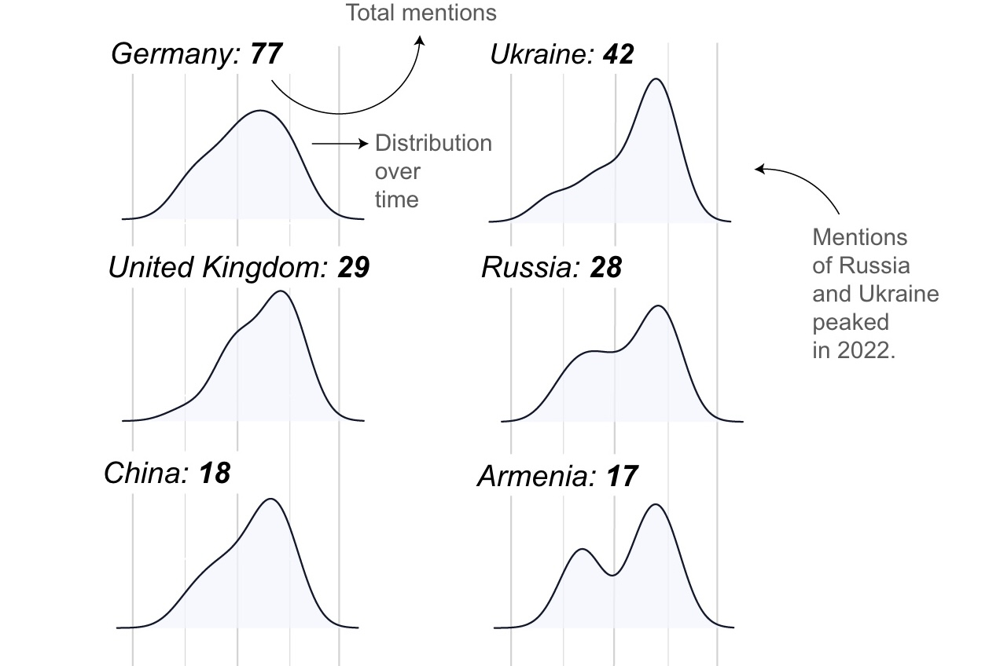
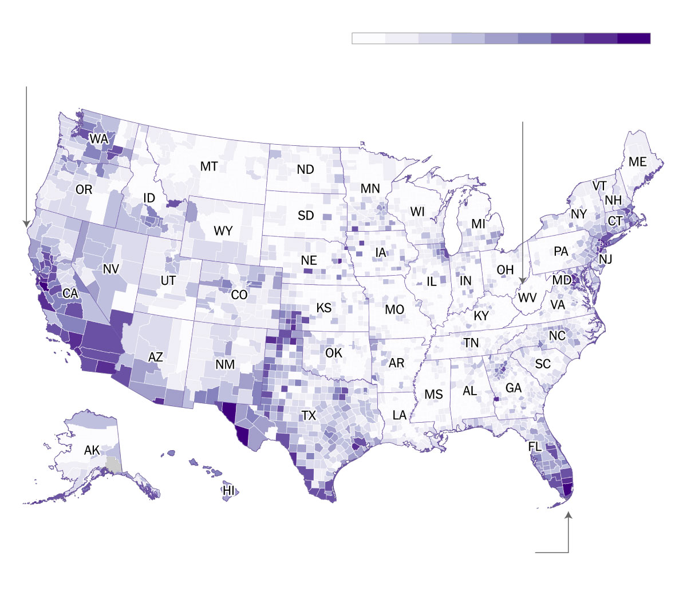
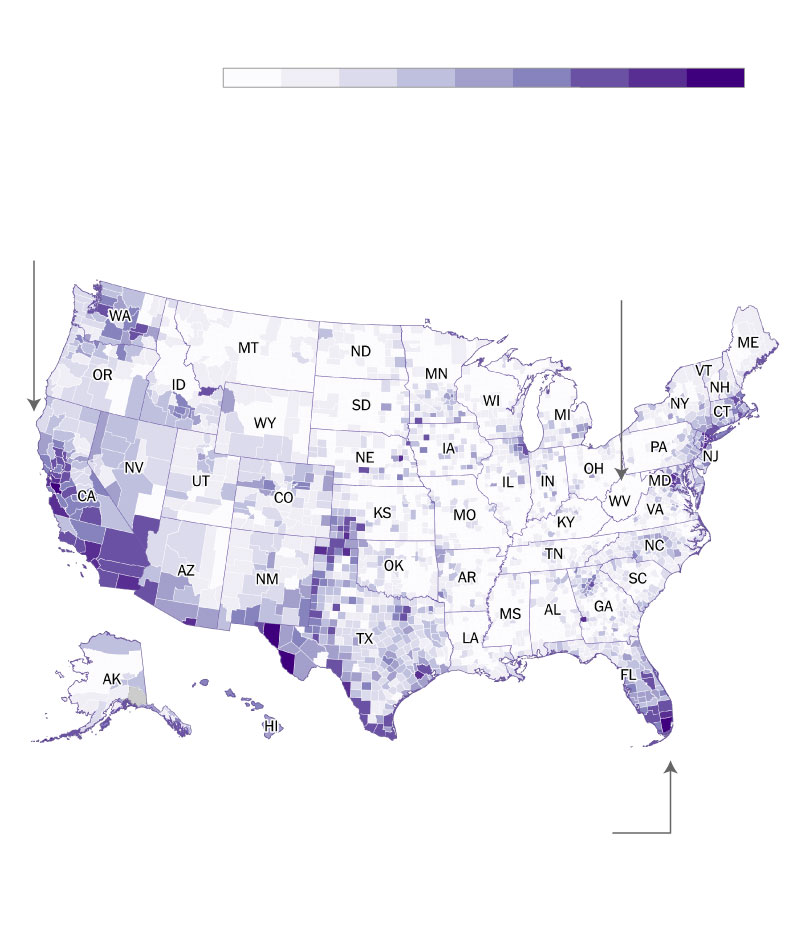
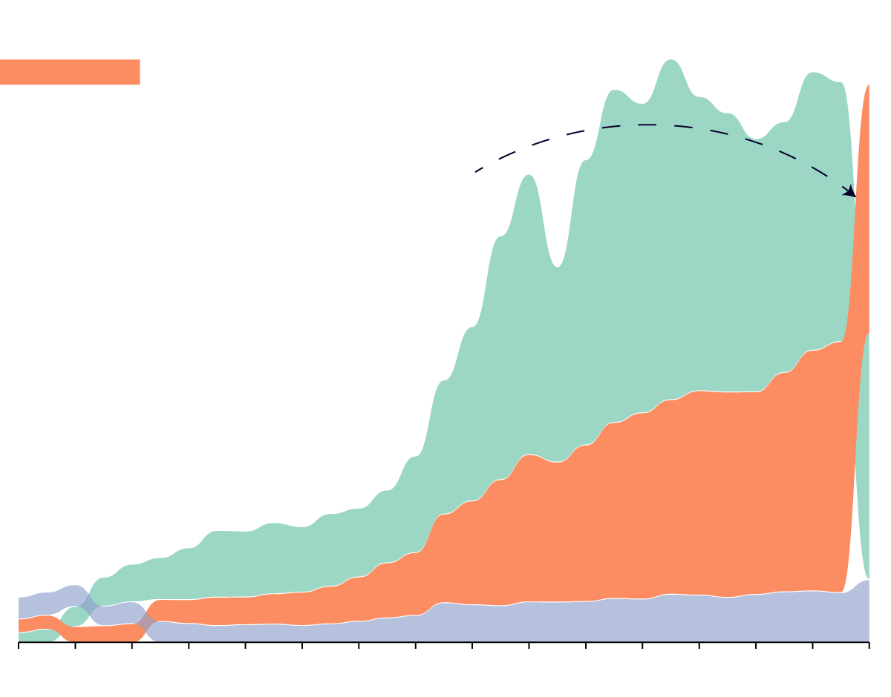

Kelly Waldron
kelly@missionlocal.com
GitHub - LinkedIn - Twitter
Bonjour/hi! I am a geographer turned data journalist. I work at Mission Local, an independent
news outlet focused on enterprise reporting, in the Mission District of San
Francisco.
I am a graduate of McGill University and Columbia Journalism School, where I completed a
Master's in Data Journalism. Before coming to
journalism, I worked at a remote sensing company, analyzing measurements of methane using satellite
technology.
I love anything involving geospatial analysis or mapping, and am excited to use those tools
to find and tell news stories.
Projects where I have scraped and analyzed data using Python:
The French
president's daily agenda
The Élysée Palace publishes a daily agenda of what Emmanuel Macron is doing
every day. I used BeatuifulSoup to scrape it, to gather data on his activities for each day between May
2017
and April 2023. I used Python, pandas and regular expressions to analyze the dataset and see who he
meets
and which topics occur the most frequently.

Housing
prices in Dublin
I used Playwright and BeautifulSoup to scrape daft.ie, a popular property
listing site in Ireland. I gathered house prices across Dublin, geocoded the address using the Google
Maps
API and aggrgated the data to display using Mapbox GL JS.
Canadian visa processing times (work
in progress)
I used Playwright to interact with dropdown menus on Immigration
Canada's website, to BeautifulSoup to scrape estimated processing times for different economic visa
categories. Using Bokeh, I build the framework for a dashboard that can auto update. I am working to
get the automated part working, and expand the scraper to include other visa categories.
A handful of standalone graphics I have made for different stories:

The US is home to over 44 million people
who were born outside of the country.
Foreign born population, as a percentage of total.
At over 26%, California
has the largest percentage
of foreign born residents
of any state.
West Virginia has the smallest share of foreign
born residents, 1.6% of the total population.
Miami-Dade County has
more foreign born residents
than any other county, over
53% of the total population.

The US is home to over 44 million people who were born outside
the country.
Foreign born population, as a percentage of total.
At over 26%, California
has the largest percentage
of foreign born residents
of any state.
West Virginia has the smallest share of foreign
born residents, 1.6% of the total population.
Miami-Dade County has
more foreign born residents
than any other county, over
53% of the total population.
Source: American Community Survey, 2018. Created using QGIS,
Adobe
Illustrator and ai2html.

1:45 a.m.: Officers responded after 5 pedestrians were
struck
by a
vehicle.
1:57 a.m.: Officers responded to another collision,
this
time
between two
vehicles. One of the drivers was allegedly responsible for the previous incident.

1:45 a.m.: Officers responded after 5 pedestrians were
struck
by a
vehicle.
1:57 a.m.: Officers responded to another collision,
this
time
between two
vehicles. One of the drivers was allegedly responsible for the previous incident.
Created using first-hand reporting with Adobe Illustrator,
Mapbox and ai2html.

Financial flows to low and middle income countries
Remittances are a vital
mechanism of
development
in low and middle income countries.
Remittances surpassed FDI during the pandemic.
Foreign
Direct
Investment

Financial flows to low and middle
income countries
Remittances are a vital
mechanism of
development in low
and middle income countries.
Remittances surpassed
FDI during the pandemic.
Foreign
Direct
Investment
Created using Rawgraphs, Adobe Illustrator and
ai2html.
Selected recent articles:
Plastic
politics in the Holy Land (Atmos Magazine)
A story on single-use plastics: a point of contention
between ultra-Orthodox and secular jews in Israel. Reported and written over a 10 day reporting trip to
Israel and the Palestinian Territories, thanks to funding from the Scripps Howard Foundation.